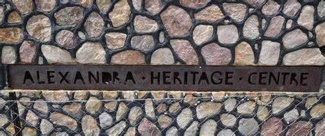
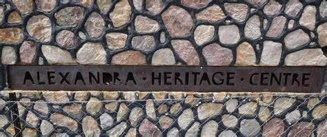

Alexander Township's Vibrant Culture

Historical Nelson Mandela Yard

Beautiful Community Art
 

Empowering Alex Spazza shops
About Alexander Township

Alexander Township, also known as Alex, is one of South Africa's oldest and most vibrant communities, located near Johannesburg. It is renowned for its historical significance and cultural richness, serving as a melting pot of South African heritage.